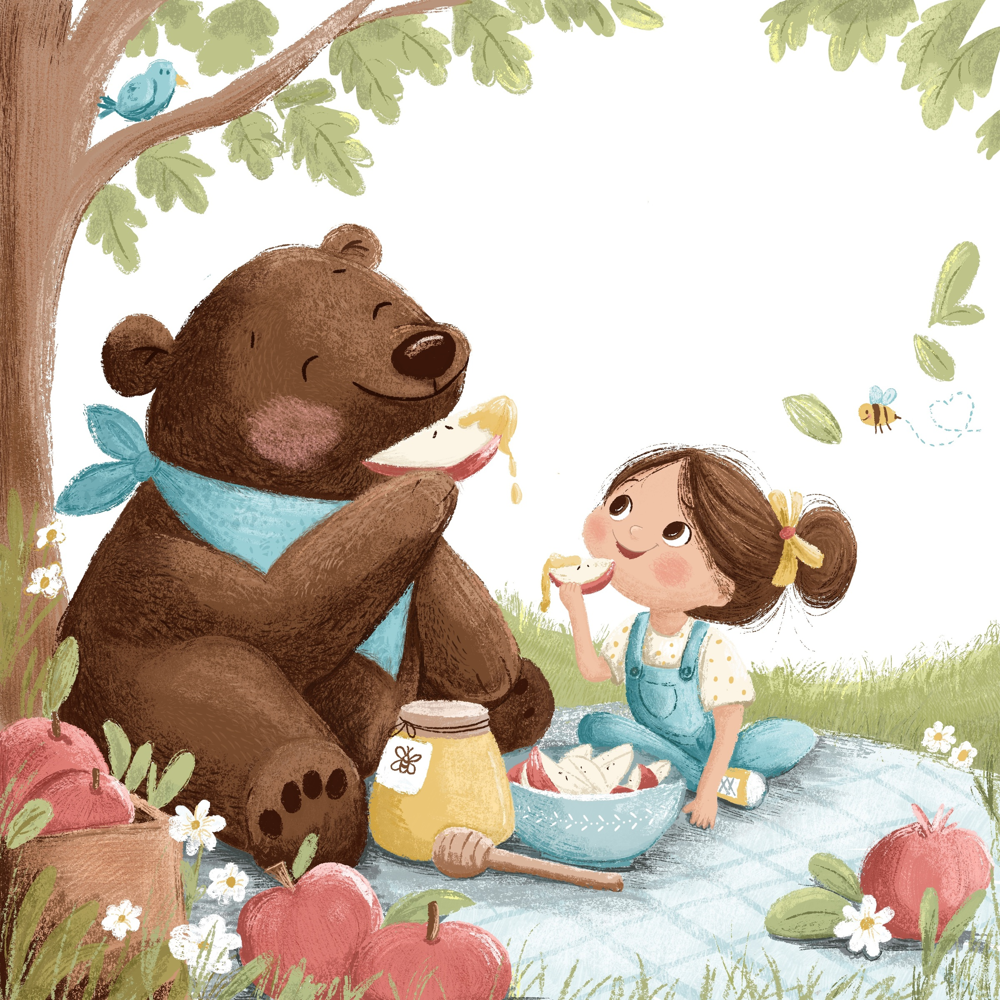
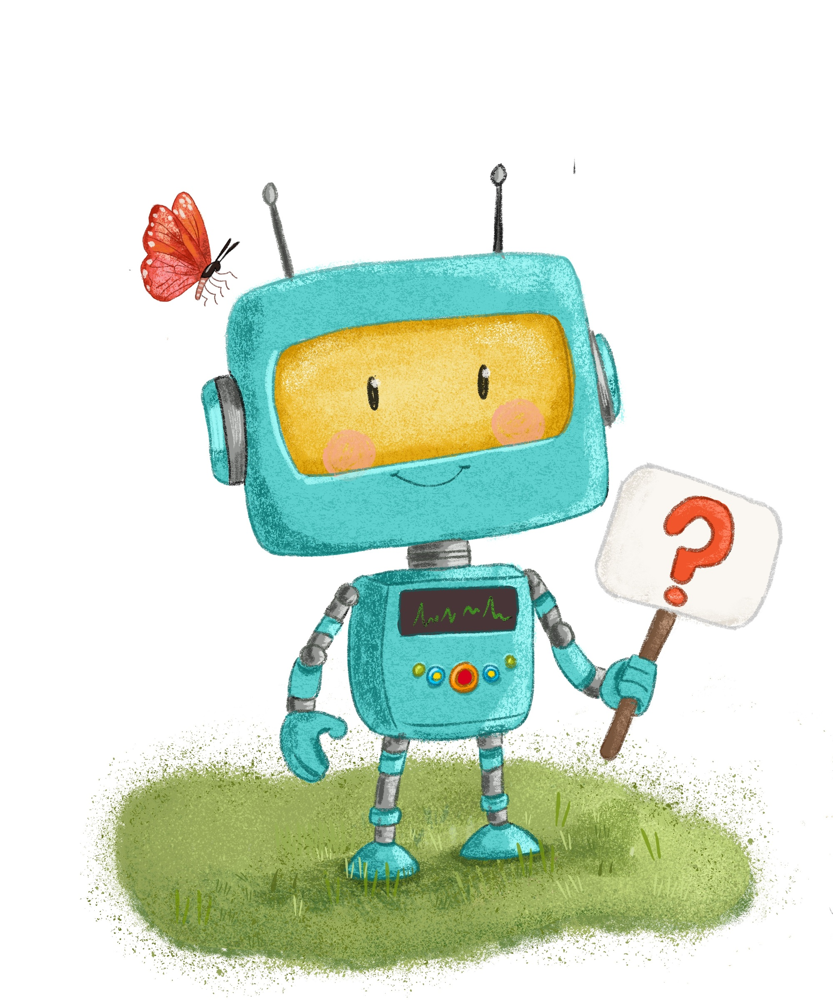
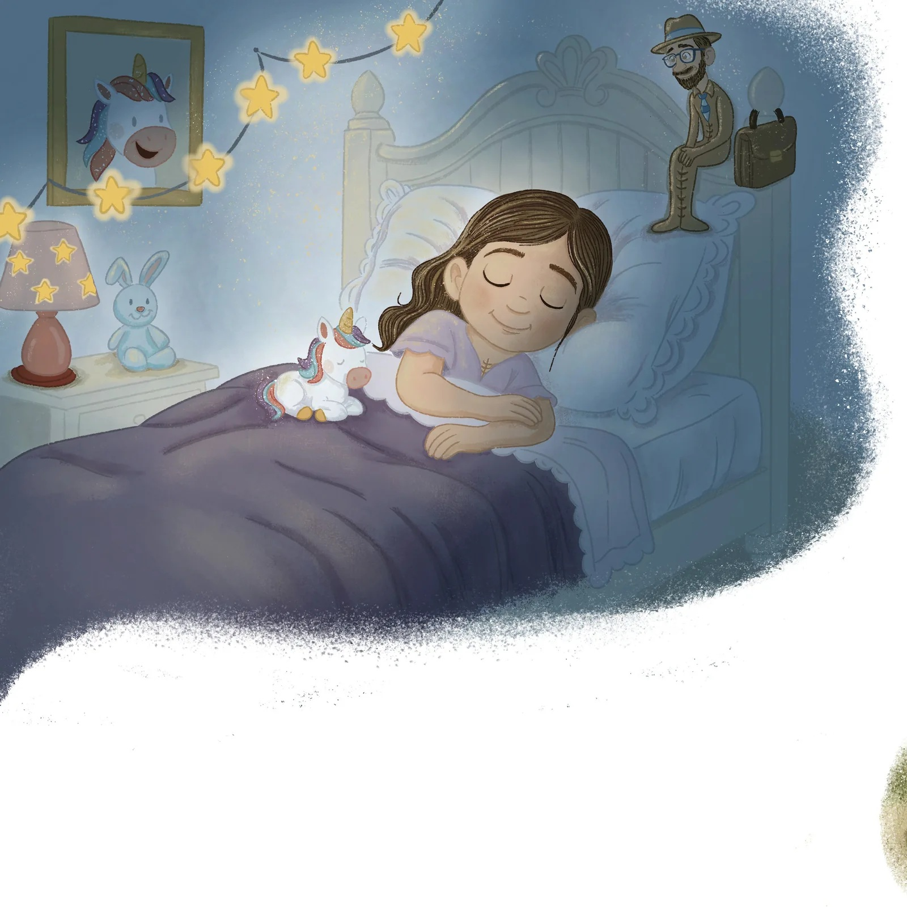
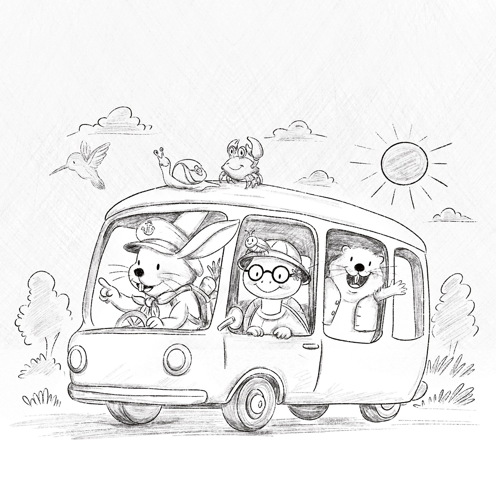
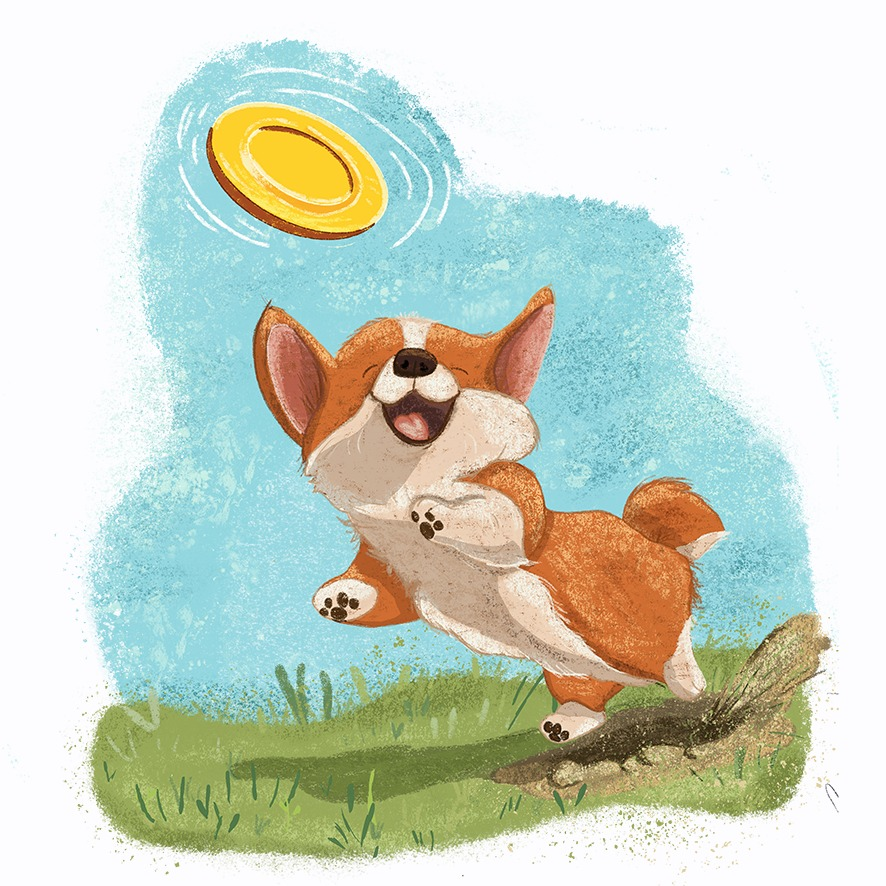
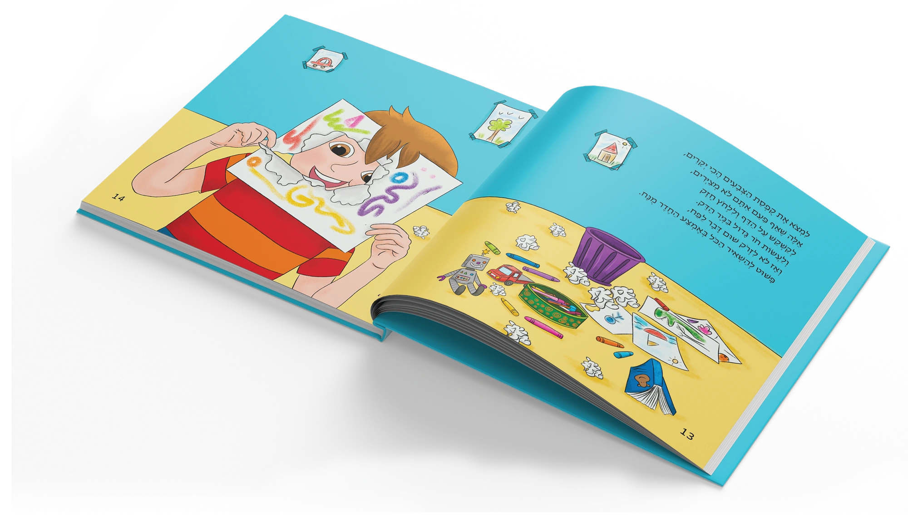
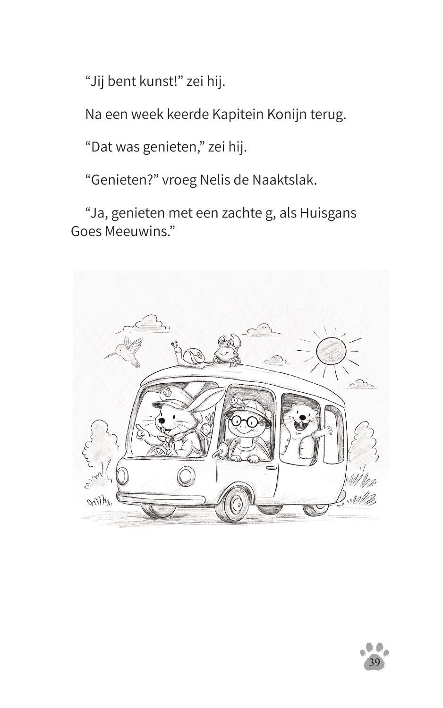

02 / IllustrationCharacters
Characters
with a story.
A quiet expression, a small gesture, a world to explore. Selected book illustrations, character series and story studies.

Grandpa’s Soup
Picture-book illustration

Bear & Girl
Story illustration

Little Stories
Character illustration

Alma and Mr. Line
Illustration · Book design
Mitz Petel
Characters & environments

Kapitein Konijn
Illustration · Cover & interior layout

Curious Tommy
Character series · Cover concept

I Wanted to Be Alone
Picture-book illustration
Illustration + book designFrom the picture
From the picture
to the whole page.
Book design brings the illustrations, text, cover and page rhythm together.
See a book project